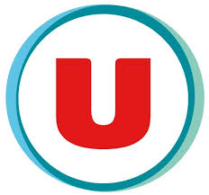

Devisse Informatique

11/11/2024 - 22/12/2024
Poste : Stagiaire en télétravail
Description : Participation à un projet de mise en place d'une architecture de
haute disponibilité pour un site web. Configuration de **Keepalived** et **HAProxy** afin d'assurer une continuité de service en cas de panne,
et amélioration de la performance et de la résilience du système.
Devisse Informatique
MAI-JUIN 2024
Poste : Stagiaire en télétravail
Description : Auto-hébergement de **RustDesk** (un logiciel de prise en main à distance similaire à TeamViewer) sur **Proxmox**,
avec un accès à **TrueNAS** pour la gestion des données à distance. Cette solution permet un contrôle sécurisé et une gestion simplifiée des ressources
et des données à distance.
Hyper U

Juillet-Août 2023
Poste : Saisonnier
Description : Optimisation des ventes en magasin : La mise en rayon organise les produits pour les rendre attrayants,
tandis que le facing assure leur orientation vers le client. La rotation de date évite le gaspillage en vendant d'abord les articles périssables
, et le balisage fournit des informations claires sur les prix et promotions, améliorant ainsi l'expérience d'achat.